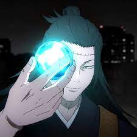
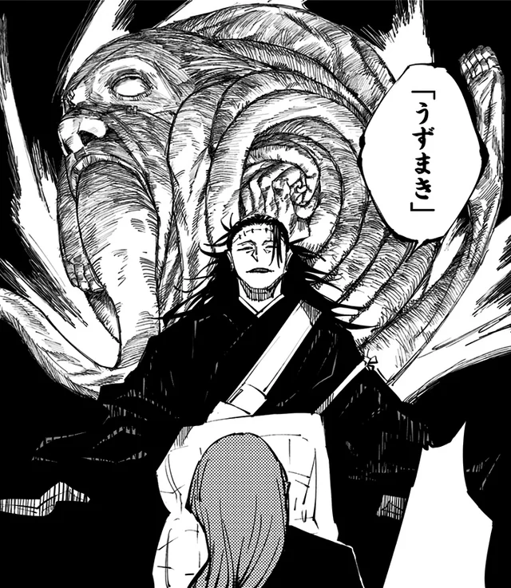

Historia
Geto era um grande amigo de Gojo, que apos falhar em uma missão de proteger a Riko Amanai percebeu o lado podre da humanidade. Depois disso ele juntou alguns feitceiros para criar o mundo novo, sem os não feitceiros, e para isso ele e seu grupo começaram a matar os não feitceiros
Tecnica
A tecnica do Geto é a Manipulação de Maldições que permite que ele absorva qualquer maldição que ele derrotar, de qualquer nivel, as transformando em pequenas bolinhas e soltar elas a qualquer momento sobre o controle dele
Tecnica Maxima: Uzumaki
O Uzumaki consiste em o Geto combinar varias maldições juntas e liberar uma explosão de energia amaldiçoada supercondesada a partir dessas maldições
